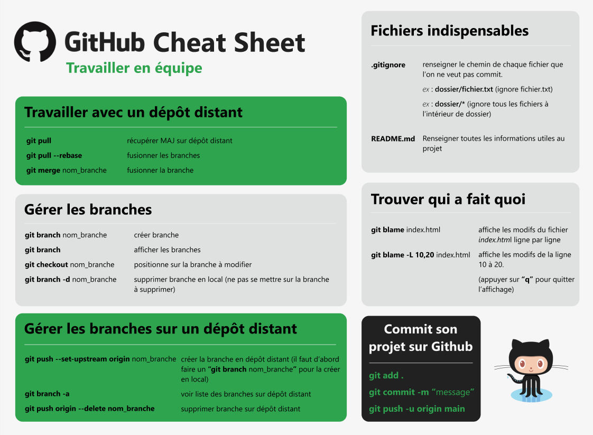

Cours Git-Hub
Travailler seul
Pré-requis
Avoir des notions de base de shell Linux
Installation
Installer git sur le poste de travail à partir de Lien de téléchargement Git
Configuration de Git
- git config --global user.name ->Configurer son nom
- git config --global user.email->Configurer son mail
- git config --global --list->Affiche la configuration du compte
Gestion de projet
Créer son projet en gestion Local
- Creér son répertoire projet et se placer dedans
- git init ->Permet d'initialiser un repository
Créer et mettre à jour son Repository en ligne
- Création de son compte sur Github Créer son compte ici
- Création du Repository sur Github
- Se placer sur devWorkingDirectory du poste de travail
- Clonner le Repository sur le poste de travail
Commande à retenir
- git status ->Voir les changements apportés
- git diff ->Voir les différences
- git add . ->Ajouter les modifications
- git commit -m "explication du commit" ->Commiter les modifications
- git push -u origin master ->Repousser sur le master en ligne
- git log ->Lister les commits
- git clone lien-github.com ->Récupérer son travail depuis le dépôt
- git show sha-1 ->Voir commit spécifique au sha-1
- git checkout sha-1 ->Se déplacer sur les sources d'un ancien commit
- git checkout master ->Se déplacer sur les sources du master
Clean Cheat Sheet

Travailler en équipe
Donner des accès depuis gitub -> setting-> manage access
test de la branche
Clean Cheat Sheet
